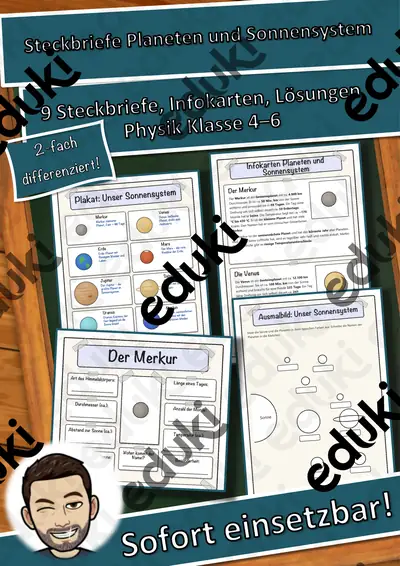
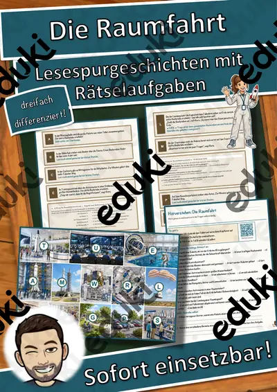
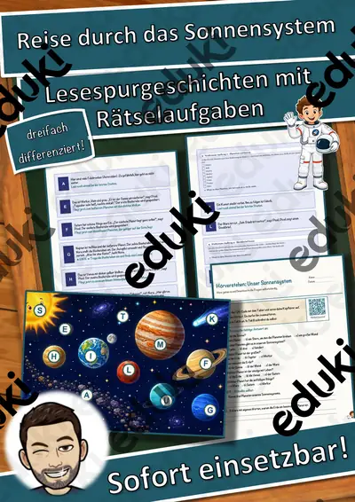
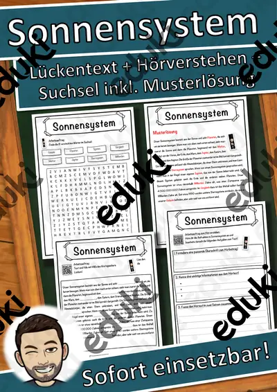
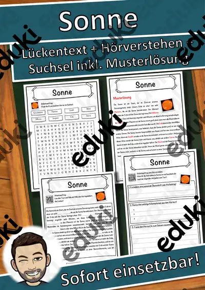
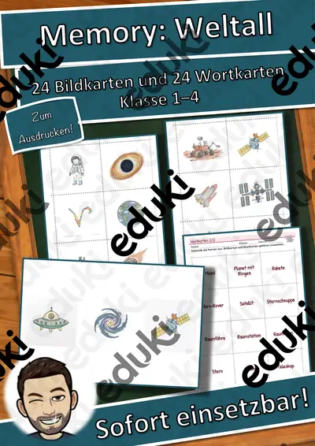
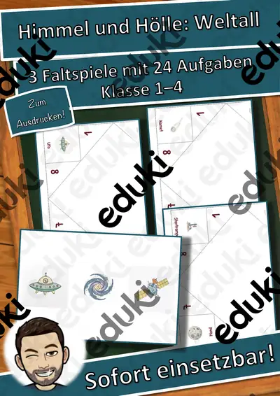

Sonnensystem und Planeten: Arbeitsblätter für Klasse 3–8 (Sachunterricht)
Sonne, Planeten und Monde liefern Zahlen, die Staunen auslösen. Der Unterricht beginnt in der Grundschule mit Reihenfolge und Merkmalen und vertieft später Entfernungen, Umlaufzeiten und die Erforschung durch Raumsonden.
Die Begriffsliste dieser Einheit: Sonne, Planeten, Erde und Mond, Umlaufbahn, Gesteins- und Gasplaneten und Raumfahrt.
Wo genau im Lehrplan das Thema steht, unterscheidet sich von Land zu Land, häufig im Fach Sachunterricht in den Klassen 3 bis 8. Gemeinsames Ziel: die Schülerinnen und Schüler nennen die Planeten in der richtigen Reihenfolge und beschreiben Besonderheiten einzelner Himmelskörper.
Wer Sonnensystem und Planeten auf mehrere Stunden verteilt, startet mit Sonne, übt an Erde und Mond und schließt mit Gesteins- und Gasplaneten ab. Alle Blätter sind kopierfertig und enthalten Lösungen für die schnelle Kontrolle. Zur Differenzierung eignen sich die Lesespurgeschichten mit ihren drei Niveaustufen.
Aus unserem Katalog gehören 50 Materialien zu diesem Thema, darunter Steckbriefe Planeten und Sonnensystem, Materialpaket Sonnensystem (Flipbook und Sonnensystem. Der Bestand umfasst 2 Lesespurgeschichten und 17 Lückentexte mit Hörverstehen und reicht über Klasse 2–8. Ein maßstäbliches Sonnensystem auf dem Schulflur macht Entfernungen spürbar, die sich Zahlen entziehen.
Das gehört zum Thema
Passende Arbeitsblätter und Materialpakete

Steckbriefe Planeten und Sonnensystem – Materialpaket (8 Planeten und Zwergplanet Pluto, differenziert, mit Lösungen)

Materialpaket Sonnensystem (Flipbook, Steckbriefe, Tafelmaterial)

Sonnensystem - Materialpaket Sonnensystem

Die Raumfahrt – Lesespurgeschichte mit Rätselaufgaben (Klasse 8)

Reise durch das Sonnensystem – Lesespurgeschichte mit Rätselaufgaben (Klasse 6)

Sonnensystem Lückentext mit Wortspeicher Hörverstehen und Suchsel

Sonne Lückentext mit Wortspeicher Hörverstehen und Suchsel

Saturn Lückentext mit Wortspeicher Hörverstehen und Suchsel

Planet Lückentext mit Wortspeicher Hörverstehen und Suchsel

Weltall Lückentext mit Wortspeicher Hörverstehen und Suchsel

Venus Lückentext mit Wortspeicher Hörverstehen und Suchsel

Uranus Lückentext mit Wortspeicher Hörverstehen und Suchsel

Raumfahrt Lückentext mit Wortspeicher Hörverstehen und Suchsel

Jupiter Lückentext mit Wortspeicher Hörverstehen und Suchsel

Mond Lückentext mit Wortspeicher Hörverstehen und Suchsel

Milchstraße Lückentext mit Wortspeicher Hörverstehen und Suchsel

Komet Lückentext mit Wortspeicher Hörverstehen und Suchsel

Merkur Lückentext mit Wortspeicher Hörverstehen und Suchsel

Mars Lückentext mit Wortspeicher Hörverstehen und Suchsel

Galaxie Lückentext mit Wortspeicher Hörverstehen und Suchsel

Astronaut Lückentext mit Wortspeicher Hörverstehen und Suchsel

Asteroid Lückentext mit Wortspeicher Hörverstehen und Suchsel

Memory: Weltall – Bild-Wort-Spiele – Klasse 1–4

Himmel und Hölle: Weltall – Himmel und Hölle – Klasse 1–4
Weitere 26 Materialien zum Thema im Material-Finder.
Häufige Fragen
Für welche Klassenstufe passen die Arbeitsblätter zu Sonnensystem und Planeten?
Passend sind Klasse 2–8. Von den 50 Titeln wenden sich die meisten an Klasse 6, einige lassen sich differenzierend auch in benachbarten Stufen nutzen.
Welche Inhalte decken die Materialien zu Sonnensystem und Planeten ab?
Die Materialien arbeiten an Sonne, Planeten und Erde und Mond und gehen dann weiter zu Umlaufbahn, Gesteins- und Gasplaneten und Raumfahrt. Vorab lohnt ein Blick in den Lehrplan des eigenen Bundeslandes.
Wie setze ich Sonnensystem und Planeten im Unterricht ein?
Ein maßstäbliches Sonnensystem auf dem Schulflur macht Entfernungen spürbar, die sich Zahlen entziehen. Danach genügt meist ein Material als Einstieg und eines zum Üben.
Mehr Material nach Fach und Klasse
- Alle Materialien Deutsch
- Arbeitsblätter Deutsch Klasse 3
- Arbeitsblätter Deutsch Klasse 4
- Arbeitsblätter Deutsch Klasse 5
- Arbeitsblätter Deutsch Klasse 6
- Arbeitsblätter Deutsch Klasse 7
- Arbeitsblätter Deutsch Klasse 8
- Unterrichtsmaterial Klasse 3
- Unterrichtsmaterial Klasse 4
- Unterrichtsmaterial Klasse 5
- Unterrichtsmaterial Klasse 6
- Unterrichtsmaterial Klasse 7
- Unterrichtsmaterial Klasse 8
Verwandte Lehrplanthemen
- Sterne, Sternbilder und Astronomie (Sachunterricht, Klasse 4–8)
- Geld und Konsum (Sachunterricht, Klasse 2–10)
- Halloween (Sachunterricht, Klasse 2–6)
- Luft und Atmosphäre (Sachunterricht, Klasse 2–7)
- Medien und Internet (Sachunterricht, Klasse 3–9)